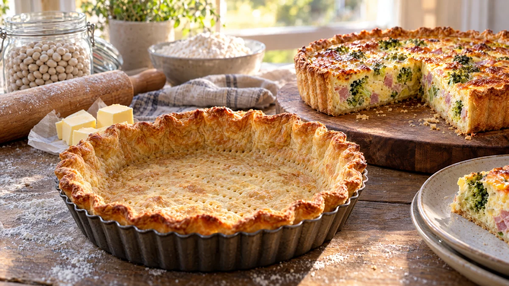

RESTFEST · RECEPTGrundrecept · Fika & bakning
Frasig pajdeg med smör
Mjöl, kallt smör och några skedar isvatten. Degen nyps ihop på fem minuter och gräddas till ett frasigt, gyllene pajskal som håller för allt från kylskåpets sista grönsaker och ostbitar till en söt äppelpaj. Grundreceptet som gör rester till middag.
- Förberedelse
- 15 min + 40 min vila
- Tillagning
- 17 min förgräddning
- Portioner
- 1 pajskal, ca 24 cm
- Nivå
- Nybörjare
 Det här behöver du
Det här behöver du
Tryck på + vid det du behöver köpa.
Gör så här
- Blanda mjöl och salt. Skär smöret i små tärningar och nyp ihop det med mjölet med fingertopparna, eller kör kort i en matberedare, tills det ser ut som grova smulor. Arbeta snabbt så att smöret inte blir varmt.
- Tillsätt vattnet en matsked i taget och arbeta ihop till en deg. Knåda inte, då blir pajskalet segt.
- Platta till degen till en rund kaka, slå in den i plastfolie och låt den vila i kylen i 30 minuter.
- Sätt ugnen på 200 grader. Kavla ut degen ca 3 mm tjock på ett mjölat bakbord, eller mellan två bakplåtspapper. Klä en pajform med löstagbar botten, ca 24 cm, tryck in degen i hörnen och låt kanten hänga över lite.
- Nagga botten med en gaffel och ställ formen i frysen i 10 minuter. Kall deg krymper mindre i ugnen.
- Lägg ett bakplåtspapper i formen och fyll med torkade bönor eller ris. Grädda i nedre delen av ugnen i 12 minuter. Ta bort papper och bönor och grädda 5 minuter till, tills botten är torr och ljust gyllene.
- Skär bort den överhängande kanten med en vass kniv. Fyll och grädda vidare enligt ditt recept.
Användning och tips
- Grundfyllning till en matpaj: vispa ihop 3 ägg, 3 dl mjölk eller grädde och 2 dl riven ost. Strö 2–3 dl rester i pajskalet, t.ex. broccoli, skinka, stekt lök eller champinjoner, häll över äggstanningen och grädda i 175 grader i 30–35 minuter.
- För en söt paj, byt saltet mot 1 msk strösocker.
- Nyp kanten i vågor med fingrarna innan förgräddningen, så ser pajen hemgjord och vacker ut.
- Degen håller 3 dagar i kylen och ca 3 månader i frysen. Bönorna kan sparas i en burk och användas igen.
Mått och ugnstemperaturer
Måtten är svenska (dl, msk, tsk, krm). Ugnstemperaturerna gäller vanlig ugn med över- och undervärme; med varmluft, sänk med 20 grader.